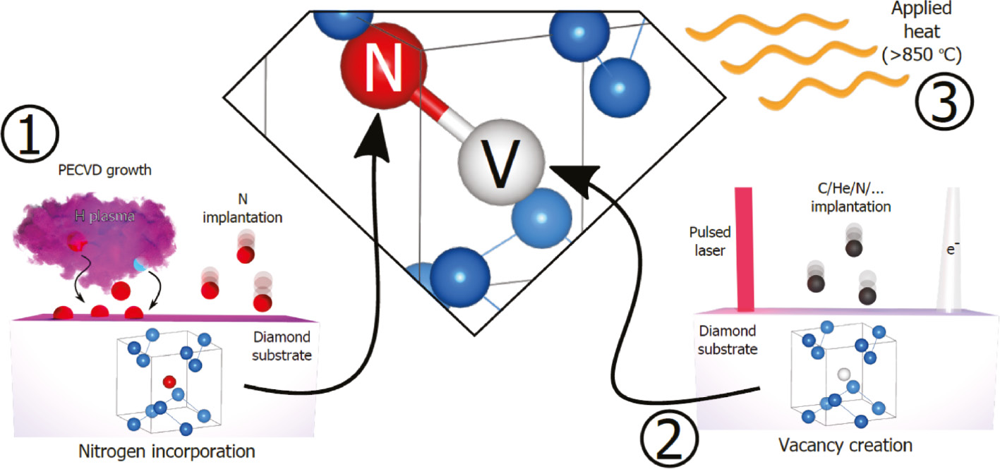

In Module A and Module B, you were shown how quantum computers can be used to solve many problems that might be faced in the design of a smart city. However, there is much more to quantum computer engineering than just program design. First of all, to run our quantum programs we would need a real quantum computer in our smart city. It turns out that there are many ways to design qubits, each with their own advantages and limitations. Moreover, once we have decided on our choice of hardware, we still need to know how to run our programs on the quantum computer. It turns out that quantum hardware also opens new avenues in smart city design, such as \emph{quantum sensing}, which we have not yet explored in either the lectures or challenges.
The goal of this module is to introduce you to the diverse world of quantum hardware. The module is broken up into two challenges, which can be completed independently. In the first challenge, you will explore different types of qubits and learn how to run a quantum program on a real IBM quantum computer! In the second challenge, you will be introduced to quantum sensing and learn how it differs from the current technology we use in smart city design.
About the Image: The image on this page depicts an NV-center. The original image can be found here and is used under the Creative Commons Attribution-Share Alike 4.0 International license.